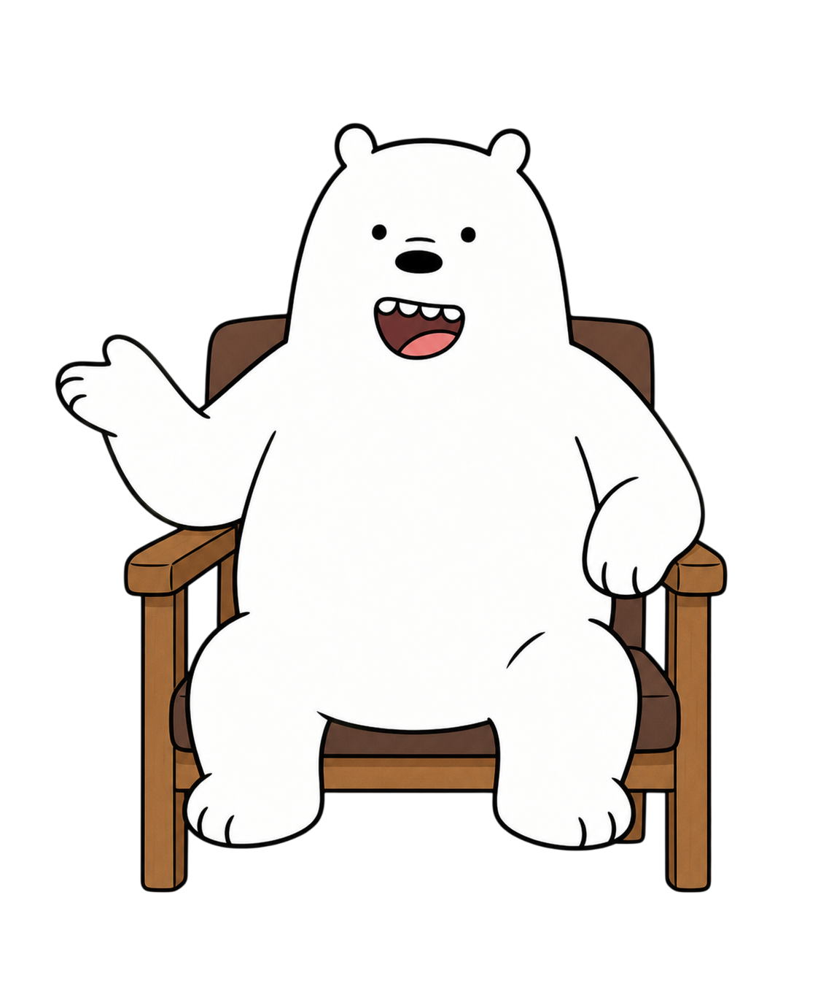

Comunidade dos Cuidadores
Um espaço entre quem cuida: converse em tempo real, troque experiências e dúvidas, e conte com o Lumi Theo para orientar com base na prática.
—
Moderado pelo Lumi Theo

0 / 2000
Conceitos que ajudam
Boas práticas simples e eficazes — vale guardar para os dias difíceis.
Pergunta pro Lumi Theo
Está com uma dúvida sobre algo que está vivendo com seu adolescente? Pergunte aqui — ninguém mais vê.
Ferramentas ABA
Recursos práticos da Análise do Comportamento Aplicada para apoiar o aprendizado e a regulação do seu adolescente — com o Lumi Theo ajudando em cada um.
Dicas pra hoje
O Lumi Theo monta orientações rápidas pensadas para você. Pode gerar quantas vezes quiser.